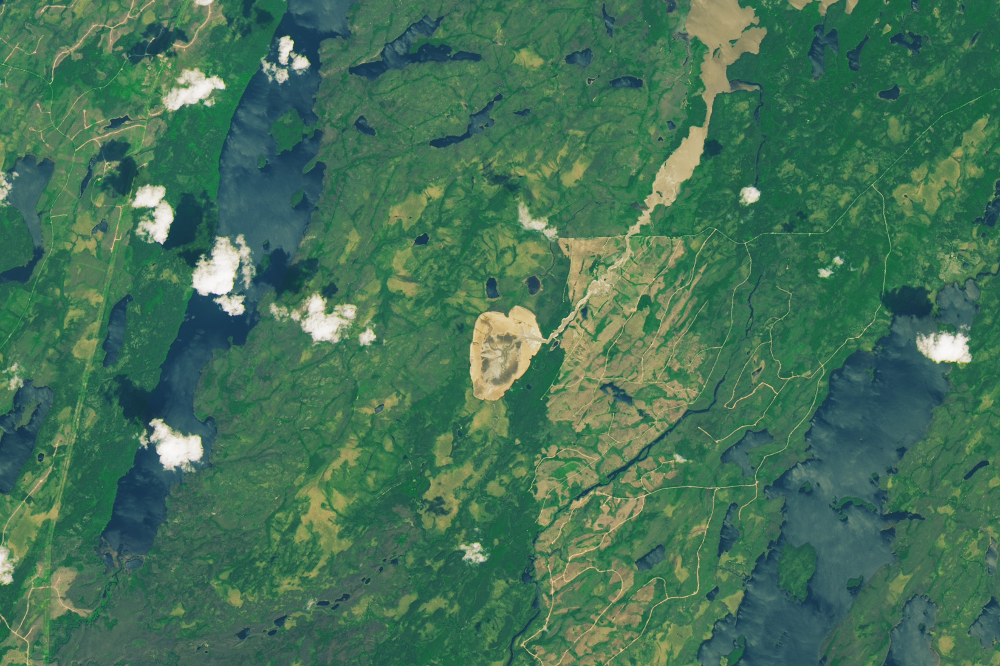

The Disappearance of Lac Rouge
A landscape in central Quebec transformed suddenly in spring 2025 when a lake burst its banks and drained. Members of the nearby community of Waswanipi, who use the area for hunting, fishing, and trapping, learned of the curious incident in early May, after reports of a washed-out road. Further air- and ground-based investigations revealed that land around the lake had collapsed and that Lac Rouge had emptied.
The image above (right) shows a drained Lac Rouge and the new course charted by its outflow on June 15, 2025. For comparison, the left image shows the area the previous June, when the lake was full. Both were acquired with the OLI-2 (Operational Land Imager-2) on Landsat 9.
Lac Rouge breached its eastern bank and drained to the northeast. Instead of following its existing outflow path, the water punched through a row of smaller lakes and ponds before reaching Lac Doda, about 10 kilometers (6 miles) away. The sediment-laden water from Lac Rouge contrasts with areas of dark, undisturbed water in a wider view of the area (below).
A small, roughly oval-shaped lakebed is in the center of this satellite image of Quebec. A tan channel runs northeast from the lakebed until it meets a large lake that runs along the left and top sides of the image. To the left of the channel, the lake water appears dark blue, and to the right, it appears tan.
The cause of Lac Rouge’s emptying was yet to be confirmed, according to a May statement from the Cree First Nation of Waswanipi. However, it may have been related to snowmelt, recent rainfall, and changes to the land from wildland fires, they noted. Imagery from Landsat suggests that the breach likely occurred between April 29 and May 14, 2025.
Fires burned near the lake in 2019 and 2023, which may have left soil more susceptible to erosion. Roots help secure soil and preserve its moisture, but these benefits are lost when fire weakens or consumes vegetation. Wildfires can also make soils more water-repellent, which means that less water infiltrates the ground and more runs over the surface. Experts also noted that regional snow cover melted quickly in spring 2025, potentially allowing larger volumes of water to flow into the lake around the time of its failure.
Officials urged people to avoid the area near Lac Rouge and remain vigilant around lakes surrounded by recently altered forests. Community members expressed concern that the shifts in water flow out of Lac Rouge and the influx of sediment to Lac Doda may affect moose, sturgeon, and other species’ habitat.